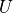

ofex.sampling_simulation¶
This module initializes and simulates some quantum algorithm’s building blocks.
The module contains imports and function declarations for performing Hadamard tests, extended SWAP tests for QKSD (Quantum Krylov Subspace Diagonalization).
Available components:
hadamard_test_general, hadamard_test_qubit_operator, hadamard_test_fermion_operator: Functions for performing Hadamard-based quantum tests.
prepare_qksd_est_op, prepare_qksd_est_state, qksd_extended_swap_test: Tools for preparing and performing QKSD extended SWAP tests.
sampling_base: Provides a base framework for sampling from probability distributions.
- ofex.sampling_simulation.hadamard_test_general(overlap: complex, imaginary: bool, coeff: Number = 1.0) ProbDist[source]¶
Computes the probability distribution for a Hadamard Test.
This function generates the probability distribution for a Hadamard Test, where the expectation value is computed as :math:
c \braket{\phi_1 | \phi_2}. It supports computation for both the real and imaginary components of the overlap.- Parameters:
overlap (complex) – The overlap value :math:
\braket{\phi_1 | \phi_2}, provided as a complex number.imaginary (bool) – If True, computes the probability distribution for the imaginary component of the overlap. If False, computes the real component.
coeff (Number, optional) – A scaling coefficient :math:
capplied to the probabilities. Defaults to 1.0.
- Returns:
- The probability distribution for the chosen component (real or imaginary) of the
expectation value.
- Return type:
- Raises:
ValueError – If the absolute value of the overlap exceeds 1.0, which indicates a non-unitary operator.
- ofex.sampling_simulation.hadamard_test_qubit_operator(ref_state_1: ndarray | Dict[BinaryFockVector, Number] | lil_matrix, ref_state_2: ndarray | Dict[BinaryFockVector, Number] | lil_matrix, unitary: QubitOperator | None = None, coeff=1.0, sparse_1: bool = False, sparse_2: bool = False) Tuple[ProbDist, ProbDist][source]¶
Computes probability distributions for the Hadamard Test expectation value of a qubit operator.
This function calculates the real and imaginary components of the expectation value:
where  is an optional unitary operator applied to the second reference state . If the scaling coefficient
 is zero, the function returns trivial distributions.
is zero, the function returns trivial distributions.- Parameters:
ref_state_1 (State) – The first reference state .
ref_state_2 (State) – The second reference state .
unitary (Optional[QubitOperator]) – An optional unitary operator applied to . If not provided, no unitary is applied.
coeff (float, optional) – A scaling coefficient applied to the probabilities. Defaults to 1.0.
sparse_1 (bool, optional) – A flag indicating if ref_state_1 is in sparse format. Defaults to False.
sparse_2 (bool, optional) – A flag indicating if ref_state_2 is in sparse format. Defaults to False.
- Returns:
- A tuple containing two probability distributions:
The first distribution corresponds to the real component of the expectation value.
The second distribution corresponds to the imaginary component of the expectation value.
- Return type:
- Raises:
ValueError – If the scaling coefficient is not a finite number.
- ofex.sampling_simulation.prepare_qksd_est_op(operator: QubitOperator | Tuple[FermionOperator, ndarray], n_qubits: int, **f2q_kwargs) Tuple[ndarray, Any, str][source]¶
Prepares the diagonalized operator representation for simulation of the Extended Swap Test (EST) for Quantum Krylov Subspace Diagonalization (QKSD).
This function generates a diagonalized operator in the qubit computational basis, allowing for efficient simulation and probability computation. The operator can either be a QubitOperator (representing Pauli operators) or a FermionFragment (used for fermionic systems). The function identifies the type of the operator, diagonalizes it, and returns the corresponding diagonal representation alongside the simulation object and type metadata.
- Parameters:
operator (Union[QubitOperator, FermionFragment]) – The operator to be diagonalized with polynomial resources. Can be either a QubitOperator with mutually commuting Pauli operators, or a FermionFragment, which is a tuple of (FermionOperator, np.ndarray) (Refer to ofex.transform.double_factorization).
n_qubits (int) – The number of qubits in the system.
**f2q_kwargs – Additional keyword arguments passed to fermion-to-qubit transformations, including ‘transform’ keyword, required for FermionFragment input only. See ofex.transforms.fermion_to_qubit_operator.
- Returns:
- A tuple containing:
The diagonal representation of the operator as a real NumPy array.
The simulation object (Clifford history or orbital permutation matrix).
The simulation type (“PAULI” for Pauli-based simulations, “FERMION” for fermionic simulations).
- Return type:
Tuple[np.ndarray, Any, str]
- ofex.sampling_simulation.prepare_qksd_est_state(ref_state: ndarray | Dict[BinaryFockVector, Number] | lil_matrix, sim_obj, sim_type: str, **f2q_kwargs)[source]¶
Prepares the QKSD Extended Swap Test state in the diagonalized operator basis. This method transforms the input reference state into the diagonalizing basis based on the simulation type (PAULI or FERMION).
- Parameters:
ref_state (State) – The input reference state.
sim_obj (Any) – The simulation object; output of prepare_qksd_est_op. For PAULI simulations, this is the Clifford history; for FERMION simulations, this is the orbital permutation matrix.
sim_type (str) – Type of simulation; output of prepare_qksd_est_op. Must be either “PAULI” (Pauli simulation) or “FERMION” (fermionic simulation).
**f2q_kwargs – Additional keyword arguments passed to fermion-to-qubit transformations, including ‘transform’ keyword, required for FermionFragment input only. See ofex.transforms.fermion_to_qubit_operator.
- Returns:
The transformed state in the diagonalizing basis of the given operator.
- Return type:
State
- ofex.sampling_simulation.qksd_extended_swap_test_run(ref_state_1: ndarray | Dict[BinaryFockVector, Number] | lil_matrix, ref_state_2: ndarray | Dict[BinaryFockVector, Number] | lil_matrix, operator: QubitOperator | Tuple[FermionOperator, ndarray] | Tuple[ndarray, Any, str], imaginary: bool, eig_degen_tol=1e-08, prepared_op=False, prepared_state: Tuple[bool, bool] = (False, False), verbose_prob=False, **f2q_kwargs) JointProbDist[source]¶
Performs the Quantum Krylov Subspace Diagonalization (QKSD) Extended Swap Test.
This function calculates the joint probability distribution of outcomes for the simultaneous measurement of and under the QKSD framework using the Extended Swap Test. The method supports operators that are either pre-diagonalized or require diagonalization during runtime, and it works with both Pauli and fermionic operator types.
- Parameters:
ref_state_1 (State) – The first input reference state (qubit state) .
ref_state_2 (State) – The second input reference state (qubit state) .
operator (Union[QubitOperator, FermionFragment, Tuple[np.ndarray, Any, str]]) –
The operator used in the Extended Swap Test. It can be:
A
QubitOperatorrepresenting Pauli operators.A
FermionFragment: A tuple of(FermionOperator, np.ndarray)for fermionic systems.A tuple
(np.ndarray, Any, str)representing a pre-diagonalized operator, generated using the prepare_qksd_est_op function.
imaginary (bool) – If True, computes the imaginary part of the Extended Swap Test; otherwise, computes the real part.
eig_degen_tol (float, optional) – Tolerance for eigenvalue degeneracy when detecting similar probability events. Defaults to 1e-8.
prepared_op (bool, optional) – Indicates whether the operator has already been diagonalized. Defaults to False.
prepared_state (Tuple[bool, bool], optional) – Specifies whether the input reference states are already prepared in the diagonalizing basis. Defaults to
(False, False).verbose_prob (bool, optional) – If True, computes individual probability contributions for each Pauli term. Note: This is currently not implemented but may be added in the future to support bootstrapping covariance estimation. Defaults to False.
**f2q_kwargs – Additional keyword arguments for fermion-to-qubit transformations. These are mandatory for fermionic systems when unprepared objects are provided.
- Returns:
An object containing the joint probability distribution of the computed probabilities.
- Return type:
ofex.sampling_simulation.sampling_base¶
This module provides tools for representing and manipulating probability distributions.
Classes:
- ProbDist: Represents a single probability distribution. Contains methods for sampling,
computing statistical metrics such as mean, variance, and standard deviation.
- JointProbDist: Extends ProbDist to handle multidimensional events (joint distributions),
supporting covariance computation and other joint distribution functionalities.
These classes are designed for flexibility and support various operations related to probabilistic modeling and numerical simulations.
- class ofex.sampling_simulation.sampling_base.ProbDist(*args, **kwargs)[source]¶
Bases:
dictRepresents a probability distribution as a dictionary where keys are events and values are their probabilities. Provides functionalities for sampling, computing statistical moments, and related operations.
- sample_num(shots: int = 1, seed: int | None = None) Dict[int | float | complex, float][source]¶
Sample event occurrences based on the probability distribution.
- Parameters:
shots (int) – Number of samples to draw.
seed (Optional[int]) – Seed for the random number generator.
- Returns:
A dictionary mapping events to occurrences.
- Return type:
Dict[EventType, float]
- property true_average: int | float | complex¶
Calculate the true average (mean) of the probability distribution.
- Returns:
The computed true average value.
- Return type:
EventType
- property true_variance: float¶
Calculate the true variance of the probability distribution.
- Returns:
The computed true variance value.
- Return type:
float
- property true_std: float¶
Calculate the true standard deviation of the probability distribution.
- Returns:
The computed true standard deviation value.
- Return type:
float
- empirical_average(shots: int | float, seed: int | None = None) int | float | complex[source]¶
Calculate the empirical average of the probability distribution.
- Parameters:
shots (Union[int, float]) – The number of samples to draw for computing the average. If infinite, returns the true average.
seed (Optional[int]) – Seed for the random number generator.
- Returns:
The computed empirical average value.
- Return type:
EventType
- batched_empirical_average(shots: int | float, n_batch: int, seed: int | None = None) List[int | float | complex][source]¶
Compute a batched empirical average over multiple iterations.
- Parameters:
shots (Union[int, float]) – The number of samples to draw for each batch.
n_batch (int) – The number of batches to compute.
seed (Optional[int]) – Seed for the random number generator.
- Returns:
A list of empirical averages for each batch.
- Return type:
List[EventType]
- empirical_variance(shots: int, seed: int | None = None) float[source]¶
Calculate the empirical variance of the probability distribution.
- Parameters:
shots (int) – The number of samples to draw for computing the variance. If infinite, returns the true variance.
seed (Optional[int]) – Seed for the random number generator.
- Returns:
The computed empirical variance value.
- Return type:
float
- empirical_std(shots: int, seed: int | None = None) int | float | complex[source]¶
Compute the empirical standard deviation of the probability distribution.
- Parameters:
shots (int) – The number of samples to draw for computing the standard deviation.
seed (Optional[int]) – Seed for the random number generator.
- Returns:
The computed empirical standard deviation value.
- Return type:
EventType
- class ofex.sampling_simulation.sampling_base.JointProbDist(keywords: ~typing.List[str], distr: ~typing.Dict[~typing.Tuple[int | float | complex, ...], float], dtype=<class 'float'>)[source]¶
Bases:
ProbDistRepresents a joint probability distribution over multiple variables with additional capabilities to compute covariance and handle multidimensional events.
- classmethod unpickle(pickled_obj: Tuple[List[str], Dict[Tuple[int | float | complex, ...], float], str])[source]¶
Deserialize a joint probability distribution.
- Parameters:
pickled_obj (Tuple[List[str], Dict[Tuple[EventType, ...], float], str]) – The serialized object containing keywords, event probabilities, and data type.
- Returns:
A reconstructed JointProbDist instance.
- Return type:
- Raises:
ValueError – If the data type string is invalid.
- pickle() Tuple[List[str], Dict[Tuple[int | float | complex, ...], float], str][source]¶
Serialize the joint probability distribution into a tuple.
- Returns:
- A tuple containing
the keywords, event probabilities, and data type of the distribution.
- Return type:
Tuple[List[str], Dict[Tuple[EventType, …], float], str]
- sample_num(shots: int = 1, seed: int | None = None) Dict[Tuple[int | float | complex], float][source]¶
Sample event occurrences based on the probability distribution.
- Parameters:
shots (int) – Number of samples to draw.
seed (Optional[int]) – Seed for the random number generator.
- Returns:
A dictionary mapping events to occurrences.
- Return type:
Dict[Tuple[EventType], float]
- property true_average: Dict[str, int | float | complex]¶
Compute the true average for each variable in the joint distribution.
- Returns:
A dictionary mapping each variable label to its mean value.
- Return type:
Dict[str, EventType]
- property true_variance: Dict[str, float]¶
Compute the true variance for each variable in the joint distribution.
- Returns:
A dictionary mapping each variable label to its variance.
- Return type:
Dict[str, float]
- property true_covariance: Dict[Tuple[str, str], int | float | complex]¶
Compute the true covariance matrix over all variables in the joint distribution.
- Returns:
A dictionary mapping pairs of variables to their covariance values.
- Return type:
Dict[Tuple[str, str], EventType]
- property true_std: Dict[str, float]¶
Compute the true standard deviation for each variable in the joint distribution.
- Returns:
A dictionary mapping each variable label to its standard deviation.
- Return type:
Dict[str, float]
- empirical_average(shots: int | float, seed: int | None = None) Dict[str, int | float | complex][source]¶
Compute the empirical average for each variable based on sampled data.
- Parameters:
shots (Union[int, float]) – Number of samples to draw. If infinite, returns the true average.
seed (Optional[int]) – Seed for the random number generator.
- Returns:
A dictionary mapping variable labels to their empirical averages.
- Return type:
Dict[str, EventType]
- empirical_covariance(shots: int, seed: int | None = None) Dict[Tuple[str, str], complex][source]¶
Compute the empirical covariance matrix using sampled data.
- Parameters:
shots (int) – Number of samples to use for the computation.
seed (Optional[int]) – Seed for the random number generator.
- Returns:
Empirical covariance between all variable pairs.
- Return type:
Dict[Tuple[str, str], EventType]
- Raises:
NotImplementedError – If the number of shots is zero.
- empirical_variance(shots: int, seed: int | None = None) Dict[str, float][source]¶
Compute the empirical variance of each variable.
- Parameters:
shots (int) – Number of samples to use for the computation.
seed (Optional[int]) – Seed for the random number generator.
- Returns:
A dictionary mapping each variable label to its variance.
- Return type:
Dict[str, float]
- Raises:
NotImplementedError – If the number of shots is zero.
- empirical_std(shots: int, seed: int | None = None) Dict[str, float][source]¶
Compute the empirical standard deviation for each variable.
- Parameters:
shots (int) – Number of samples to use for the computation.
seed (Optional[int]) – Seed for the random number generator.
- Returns:
A dictionary mapping each variable label to its standard deviation.
- Return type:
Dict[str, float]